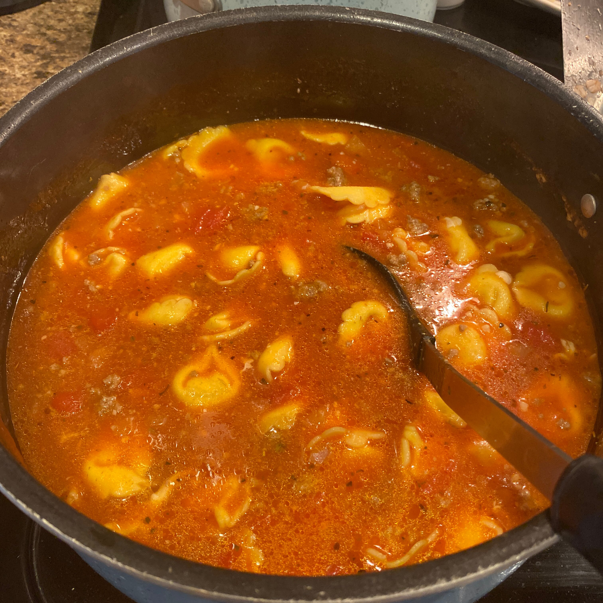

Cheesy Sausage Lasagna Soup

Description
Per Serving: 281 calories; protein 24.6g; carbohydrates 19.8g; fat 12.3g; cholesterol 75.4mg; sodium 2113.4mg.
Ingredients
- 1 pound Italian turkey sausage, casings removed
- 2 cups chopped onions
- 2 cups sliced fresh mushrooms
- 4 cloves garlic, minced
- 4 cups chicken broth
- 1 (15 ounce) can tomato sauce
- 1 (14.5 ounce) can Italian-seasoned diced tomatoes
- 1 cup uncooked mafalda pasta
- 2 cups chopped fresh spinach
- 1 cup shredded mozzarella cheese
- ¼ cup Parmesan cheese
- 4 teaspoons thinly sliced fresh basil
Steps
- Cook and stir sausage in a large pot until browned, about 5 minutes.
- Stir in onions, mushrooms, and garlic.
- Pour in chicken broth, tomato sauce, and diced tomatoes; bring soup to a boil.
- Stir pasta into the soup.
- Cook, stirring occasionally, until almost tender, about 10 minutes.
- Stir in spinach, mozzarella cheese, and Parmesan cheese.
- Remove from heat; stir in basil and let stand until pasta is tender, about 2 minutes more.
Return to homepage